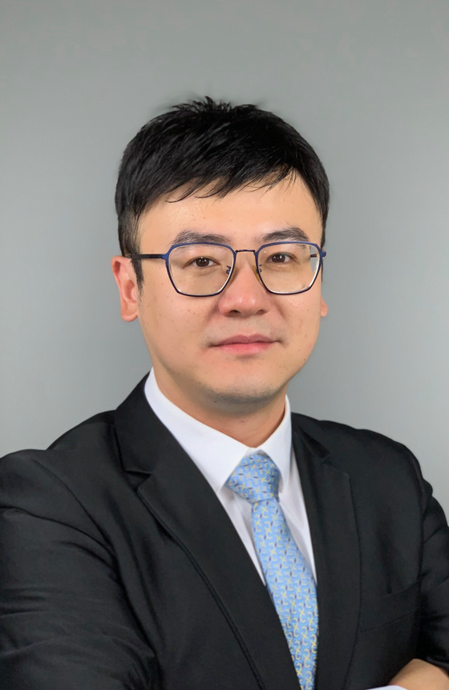

Faculty

Ir Dr PAI ZHENG
pai.zheng@polyu.edu.hkPrincipal Investigator, Associate Professor
Ir Dr PAI ZHENG is currently an Associate Professor, Wong Tit Shing Endowed Young Scholar in Smart Robotics and Director of Human-Machine Symbiotic Design and Manufacturing Laboratory (HMS-DML) in the Department of Industrial and Systems Engineering, and Associate Director of PolyU-Wuxi Technology and Innovation Research Institute, at The Hong Kong Polytechnic University, HKSAR. He is also Director of the National Centre of Technology Innovation for Intelligent Design and Numerical Control (NCDC) – Hong Kong Centre.
Dr. Zheng is a recipient of the Clarivate Web of Science High Cited Researcher (2025), iCANX Young Scientist Award Finalist (2025), HKIE Young Engineer of the Year Award (2025), SME Outstanding Young Manufacturing Engineers Award (2024), NSFC Excellent Young Scientists Fund (2024), AESM Fellow (2024), HKPU Young Innovative Researcher Award (2023), and Top 50 Global “AI+X” Chinese Young Scholars (2022).
His research interest mainly lies in human-robot collaboration, smart product-service systems, and industrial AI.
He is a Senior Member of IEEE (2022 – )/CMES (2018 – ), Member of HKIE (2022 – )/SME (2022 – )/ASME (2017 – ), CIRP Associate Member (2024 – ), SME | NAMRC Scientific Committee Member of Track 1: Manufacturing Systems (2022 – ), Chair in IEEE Hong Kong Section of Systems, Man, and Cybernetics Society Chapter (2025 –), Technical Committee Co-Chair of IEEE Robotics and Automation Society TC-Digital Manufacturing and Human-Centred Automation (2025 – ), and CMES Industrial Big Data and Intelligent Systems Chapter (2022 – ).
He also serves as the Associate Editor of SME Journal of Manufacturing Systems, IEEE Transactions on Automation Science and Engineering, Journal of Intelligent Manufacturing, Journal of Cleaner Production, and International Journal on Interactive Design and Manufacturing, Editorial Board Member of Advanced Engineering Informatics & Journal of Engineering Design, and Guest Editor/Referee for many high-impact international journals in the manufacturing/industrial engineering field.
Dr. Liqiao XIA
Co-PI, Research Assistant Professor
Dr. Liqiao XIA is currently a Research Assistant Professor in the Department of Industrial and Systems Engineering at The Hong Kong Polytechnic University, HKSAR.
Before this, he was a Visiting Research Fellow at the Vienna University of Technology, Austria, and the Karlsruhe Institute of Technology, Germany, and a Postdoctoral Scholar in the Department of Mechanical and Aerospace Engineering at Case Western Reserve University, USA.
He received his Ph.D. in Industrial and Systems Engineering from The Hong Kong Polytechnic University, HKSAR, in 2024 and was a Visiting Graduate Student at the Institute for Manufacturing, University of Cambridge, UK.
His research interests include human-robot collaboration, smart manufacturing systems, prognostics and health management, etc.
He has published numerous papers in prestigious journals, such as IEEE Trans. (TII, TMECH, TIM, TR, TBD) and RESS, among others.